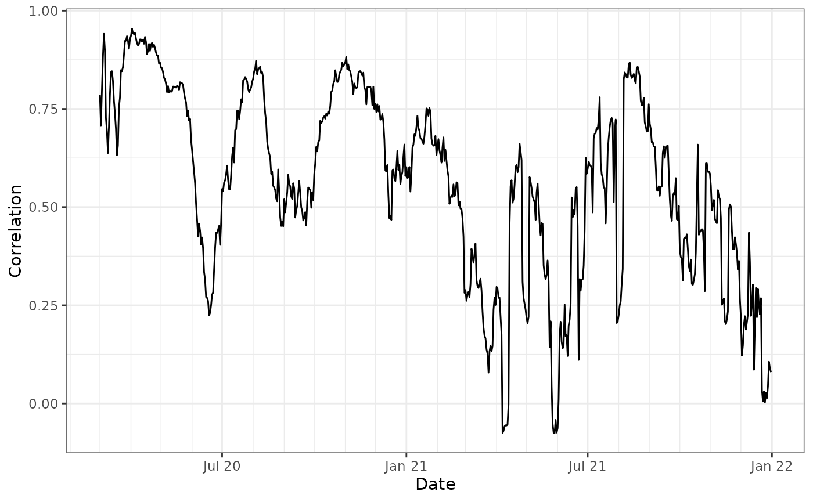
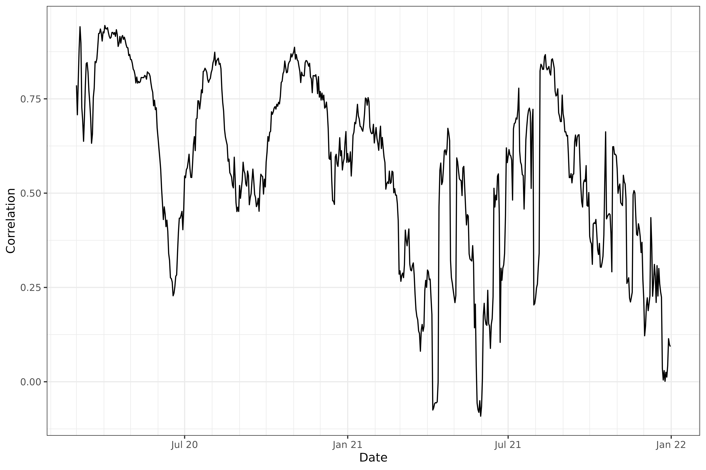

The epiprocess package provides some simple
functionality for computing lagged correlations between two signals,
over space or time (or other variables), via epi_cor().
This function is really just a convenience wrapper over some basic
commands: it first performs specified time shifts, then computes
correlations, grouped in a specified way. In this vignette, we’ll
examine correlations between state-level COVID-19 case and death rates,
smoothed using 7-day trailing averages.
The data is fetched with the following query:
x <- pub_covidcast(
source = "jhu-csse",
signals = "confirmed_7dav_incidence_prop",
geo_type = "state",
time_type = "day",
geo_values = "*",
time_values = epirange(20200301, 20211231),
) %>%
select(geo_value, time_value, case_rate = value)
y <- pub_covidcast(
source = "jhu-csse",
signals = "deaths_7dav_incidence_prop",
geo_type = "state",
time_type = "day",
geo_values = "*",
time_values = epirange(20200301, 20211231),
) %>%
select(geo_value, time_value, death_rate = value)
x <- x %>%
full_join(y, by = c("geo_value", "time_value")) %>%
as_epi_df()Correlations grouped by time
The epi_cor() function operates on an
epi_df object, and it requires further specification of the
variables to correlate, in its next two arguments (var1 and
var2).
In general, we can specify any grouping variable (or combination of
variables) for the correlation computations in a call to
epi_cor(), via the cor_by argument. This
potentially leads to many ways to compute correlations. There are always
at least two ways to compute correlations in an epi_df:
grouping by time value, and by geo value. The former is obtained via
cor_by = time_value.
library(ggplot2)
theme_set(theme_bw())
z1 <- epi_cor(x, case_rate, death_rate, cor_by = "time_value")
ggplot(z1, aes(x = time_value, y = cor)) +
geom_line() +
scale_x_date(minor_breaks = "month", date_labels = "%b %y") +
labs(x = "Date", y = "Correlation")
The above plot addresses the question: “on any given day, are case
and death rates linearly associated, across the U.S. states?”. We might
be interested in broadening this question, instead asking: “on any given
day, do higher case rates tend to associate with higher death rates?”,
removing the dependence on a linear relationship. The latter can be
addressed using Spearman correlation, accomplished by setting
method = "spearman" in the call to epi_cor().
Spearman correlation is highly robust and invariant to monotone
transformations.
Lagged correlations
We might also be interested in how case rates associate with death
rates in the future. Using the dt1 parameter in
epi_cor(), we can lag case rates back any number of days we
want, before calculating correlations. Below, we set
dt1 = -10. This means that var1 = case_rate
will be lagged by 10 days, so that case rates on June 1st will be
correlated with death rates on June 11th. (It might also help to think
of it this way: death rates on a certain day will be correlated with
case rates at an offset of -10 days.)
z2 <- epi_cor(x, case_rate, death_rate, cor_by = time_value, dt1 = -10)
z <- rbind(
z1 %>% mutate(lag = 0),
z2 %>% mutate(lag = 10)
) %>%
mutate(lag = as.factor(lag))
ggplot(z, aes(x = time_value, y = cor)) +
geom_line(aes(color = lag)) +
scale_x_date(minor_breaks = "month", date_labels = "%b %y") +
labs(x = "Date", y = "Correlation", col = "Lag")
Note that epi_cor() takes an argument
shift_by that determines the grouping to use for the time
shifts. The default is geo_value, which makes sense in our
problem at hand (but in another setting, we may want to group by geo
value and another variable—say, age—before time shifting).
We can see that, generally, lagging the case rates back by 10 days improves the correlations, confirming case rates are better correlated with death rates 10 days from now.
Correlations grouped by state
The second option we have is to group by geo value, obtained by
setting cor_by = geo_value. We’ll again look at
correlations for both 0- and 10-day lagged case rates.
z1 <- epi_cor(x, case_rate, death_rate, cor_by = geo_value)
z2 <- epi_cor(x, case_rate, death_rate, cor_by = geo_value, dt1 = -10)
z <- rbind(
z1 %>% mutate(lag = 0),
z2 %>% mutate(lag = 10)
) %>%
mutate(lag = as.factor(lag))
ggplot(z, aes(cor)) +
geom_density(aes(fill = lag, col = lag), alpha = 0.5) +
labs(x = "Correlation", y = "Density", fill = "Lag", col = "Lag")
We can again see that, generally speaking, lagging the case rates back by 10 days improves the correlations.
More systematic lag analysis
Next we perform a more systematic investigation of the correlations over a broad range of lag values.
library(purrr)
lags <- 0:35
z <- map_dfr(lags, function(lag) {
epi_cor(x, case_rate, death_rate, cor_by = geo_value, dt1 = -lag) %>%
mutate(lag = .env$lag)
})
z %>%
group_by(lag) %>%
summarize(mean = mean(cor, na.rm = TRUE)) %>%
ggplot(aes(x = lag, y = mean)) +
geom_line() +
geom_point() +
labs(x = "Lag", y = "Mean correlation")We can see that some pretty clear curvature here in the mean correlation between case and death rates (where the correlations come from grouping by geo value) as a function of lag. The maximum occurs at a lag of somewhere around 17 days.
Attribution
This document contains a dataset that is a modified part of the COVID-19 Data Repository by the Center for Systems Science and Engineering (CSSE) at Johns Hopkins University as republished in the COVIDcast Epidata API. This data set is licensed under the terms of the Creative Commons Attribution 4.0 International license by the Johns Hopkins University on behalf of its Center for Systems Science in Engineering. Copyright Johns Hopkins University 2020.
From the COVIDcast Epidata API: These signals are taken directly from the JHU CSSE COVID-19 GitHub repository without changes.